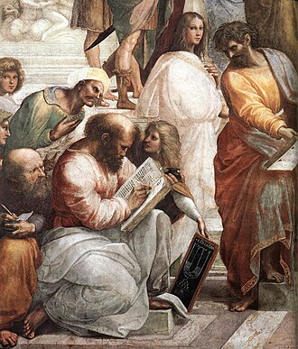
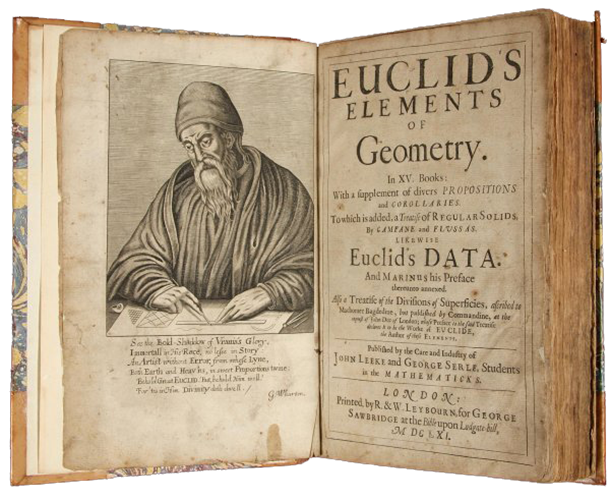
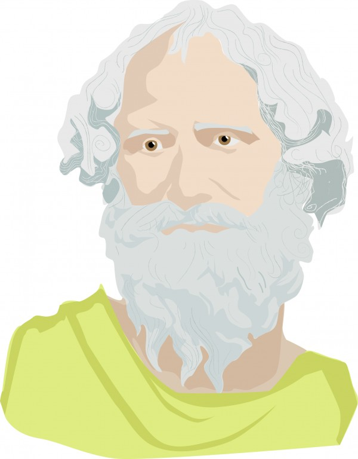
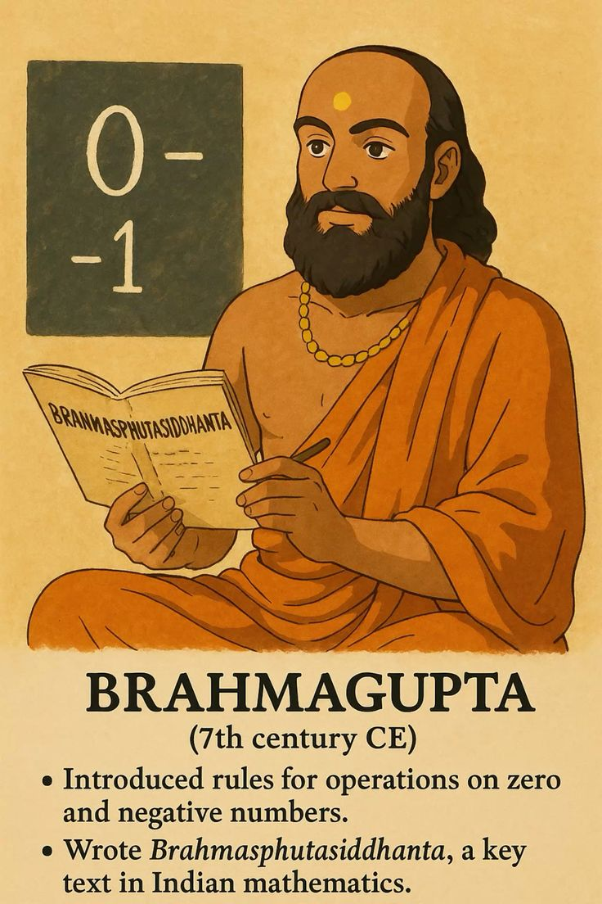
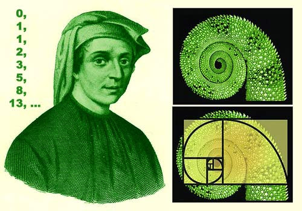
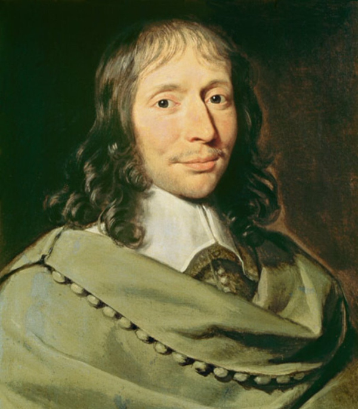

Aritmética A Origem de Tudo


Pitágoras nasceu na ilha de Samos, na Grécia Antiga, e fundou uma escola filosófica e matemática no sul da Itália. Para sua escola, os números não eram apenas ferramentas de cálculo, mas a base de toda a realidade.
Um dos maiores legados dos pitagóricos foi perceber que a matemática podia explicar fenômenos naturais, como sons musicais e proporções geométricas.
Impacto histórico:
Pitágoras ajudou a transformar a aritmética de uma ferramenta prática de comércio em uma ciência teórica. Muitos conceitos da teoria dos números começaram com sua escola.

Euclides viveu em Alexandria, no Egito, e escreveu uma das obras mais importantes da história da matemática: Os Elementos.
Contribuições para a aritmética:
Embora seja mais conhecido pela geometria, nos livros VII, VIII e IX de Os Elementos, Euclides desenvolveu conceitos fundamentais da aritmética:
Impacto histórico: Seu método lógico e organizado influenciou o ensino da matemática por mais de 2 mil anos. O algoritmo de Euclides ainda é usado em matemática e computação.

Arquimedes foi um dos maiores gênios da Antiguidade.
Contribuições para a aritmética:
O Contador de Areia: Uma de suas obras mais famosas, O Contador de Areia, mostrou como representar números extremamente grandes — algo revolucionário para a época.
Impacto histórico:
Expandiu os limites da aritmética e mostrou que números poderiam ser usados em escalas praticamente ilimitadas.

Aryabhata foi um dos maiores matemáticos da Índia antiga.
Contribuições para a aritmética:
Impacto histórico:
Seu trabalho ajudou a consolidar o sistema numérico que usamos hoje. Sua influência se espalhou para o mundo árabe e depois para a Europa.

Brahmagupta é considerado um dos maiores revolucionários da aritmética.

Fibonacci viajou pelo norte da África e aprendeu matemática árabe.
Contribuições para a aritmética:
Em seu livro Liber Abaci (1202), apresentou aos europeus:
Impacto histórico:
Mudou o comércio europeu e acelerou o desenvolvimento financeiro, bancário e científico.

Pascal foi um prodígio matemático.
Contribuições para a aritmética:
Criou a Pascaline, uma das primeiras calculadoras mecânicas da história.
Ela realizava:
Impacto histórico:
Foi um passo essencial para a criação das calculadoras modernas e computadores.
Leibniz ampliou os trabalhos de Pascal.
Contribuições:
Criou uma máquina capaz de:
Também estudou profundamente o sistema binário (0 e 1).
Impacto histórico:
Seu trabalho com números binários se tornou a base da computação moderna. Smartphones, computadores e IA usam princípios derivados disso.

Peano levou a aritmética para um nível totalmente lógico e formal.
Contribuições:
Impacto histórico:
Sua formalização é usada até hoje em: matemática pura; lógica matemática; ciência da computação; inteligência artificial. A aritmética moderna se apoia diretamente em seus estudos.